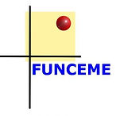
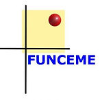

.jpg)
RAINSMOREqui signifie Raincell and Other Innovations, Satellites and Opportunistic Measurements from Telecommunication Networks, for Estimating and Spatialising Precipitation, est un réseau international de recherche (IRN) financé par l'Institut de recherche pour le développement (IRD). L'objectif de RAINSMORE est de rassembler des experts en science des données et en sciences hydrométéorologiques afin d'innover ensemble pour améliorer la mesure et l'analyse des précipitations grâce à l'exploitation de données opportunistes sensibles aux conditions météorologiques. RAINSMORE fonctionne par le biais de séminaires périodiques et d'ateliers annuels qui permettent à ses membres de se rencontrer et de faire le point sur l'avancement de leurs différents projets de recherche et sur les nouvelles techniques de traitement .


Chargée de recherche principale/Directrice de recherche, Institut de recherche pour le développement, IRD, France.
Depuis 15 ans, le Dr Marielle Gosset concentre
ses recherches sur la télédétection des précipitations par satellite et radar terrestre et ses applications à l'hydrologie. Ses principaux intérêts portent sur la compréhension de la variabilité des précipitations et
de son impact sur les processus hydrologiques et le bilan hydrique.

Il est spécialisé en satellites auprès de la NOAA (National and Oceanic Atmospheric Administration) (Washington, États-Unis, 1996-1997) et a obtenu son master en sciences marines tropicales (domaine de spécialisation : techniques de télédétection) au LABOMAR-UFC en 2005. il obtient son doctorat au Département de physique de la terre et de thermodynamique de l'Université de Valence (UV), en Espagne, en 2012.

Il est actuellement professeur associé au DETI, membre permanent du Programme de troisième cycle en ingénierie téléinformatique (PPGETI) et chercheur au GTEL, où il développe des activités de recherche liées aux systèmes de communication sans fil de 5e et 6e générations.

Rômulo A. Juca Oliveira est actuellement chercheur à l'Institut de Recherche pour le Développement (IRD) de Géosciences Environnement Toulouse (GET). Spécialiste de la télédétection des précipitations et des applications hydrologiques des produits pluviométriques.

Modeste Kacou est chercheur au Laboratoire des Sciences de la Matière, de l’Environnement et de l’Énergie Solaire (LASMES) de l’Université Félix Houphouët-Boigny d’Abidjan, en Côte d’Ivoire. Il est co-promoteur du GDRI RAINSMORE et coordonne les différentes activités de RainCell en Afrique.

Rafael Reis est actuellement chercheur à la Fondation Cearense de Météorologie et des Ressources en Eau (Funceme) et doctorant en cotutelle en Ressources en Eau à l'Université Fédérale du Ceará et en Télédétection à l'Université Toulouse III/SDU2E. Il a mené des recherches sur la planification et la gestion des systèmes hydrologiques dans le Nord-Est, et possède une vaste expérience des missions de terrain et de la coordination de projets visant à surveiller la qualité et la quantité d'eau dans les réservoirs.

Rodrigo Zambrana est doctorant à l'Université de Guyane et à WeatherForce (société française de veille météorologique). Ingénieur électronicien spécialisé en traitement du signal et des images et en science des données, il prépare un doctorat en sciences de la Terre.

En 2023, il est devenu professeur au Département d'ingénierie de la téléinformatique (DETI) de l'Université fédérale du Ceará (UFC, Brésil). À l'UFC, il collabore avec l'Institut de Recherche pour le Développement (IRD, France) sur des recherches impliquant l'apprentissage automatique et la météorologie.

Émilie Poisson-Caillault est professeure à l'Université du Littoral (ULCO), à Lille. Elle est spécialisée en apprentissage automatique et en science des données.
Émilie Poisson-Caillault est professeure à l'Université du Littoral (ULCO), à Lille. Elle est spécialisée en apprentissage automatique et en science des données.
 

© 2025 RAINSMORE. Tous droits r√©serv√©s.